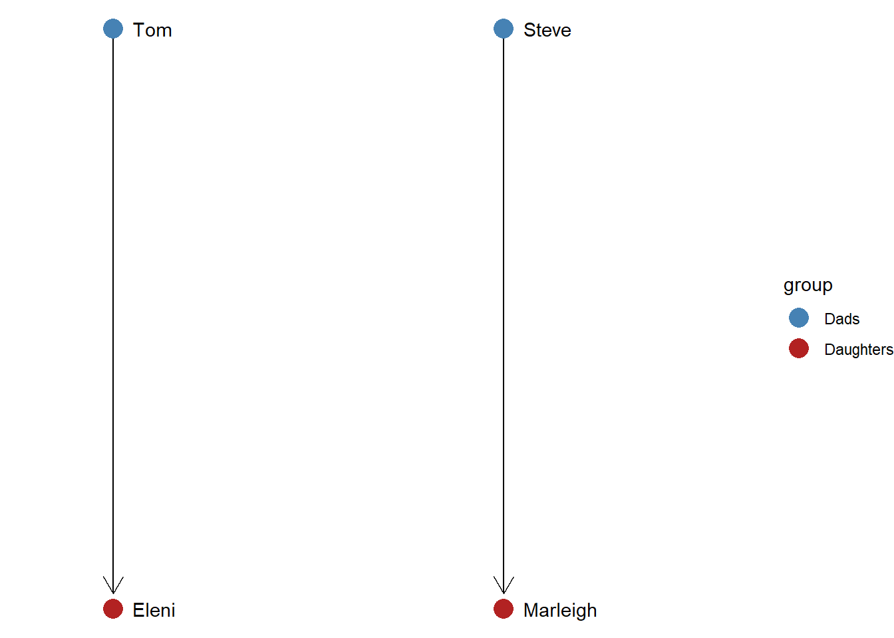
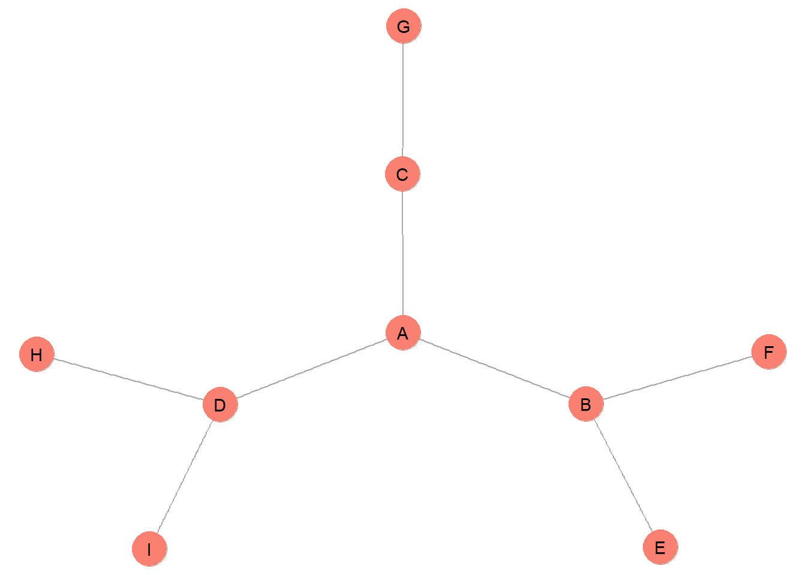
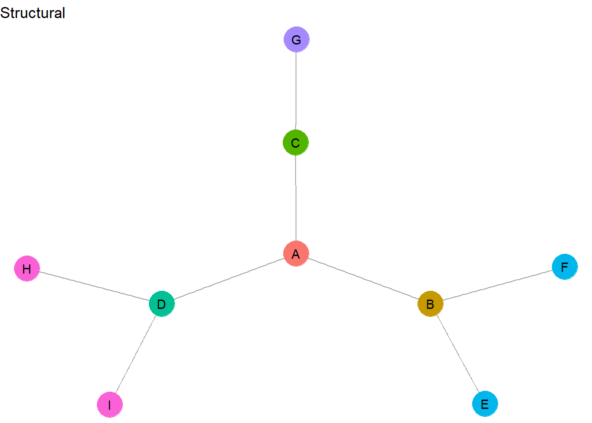
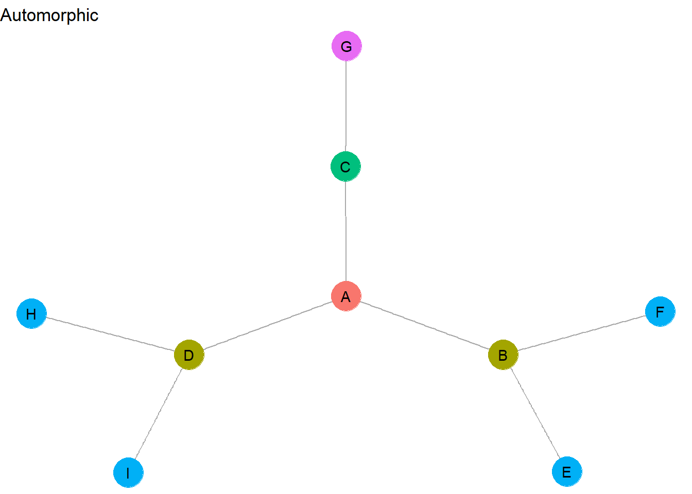
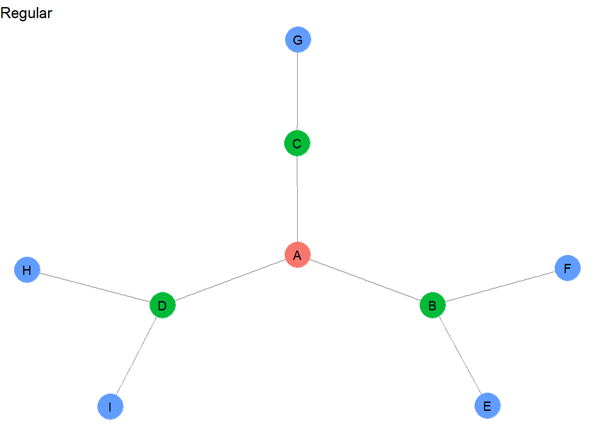
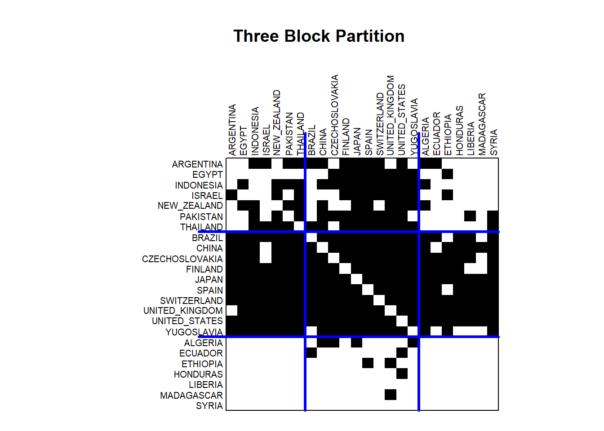
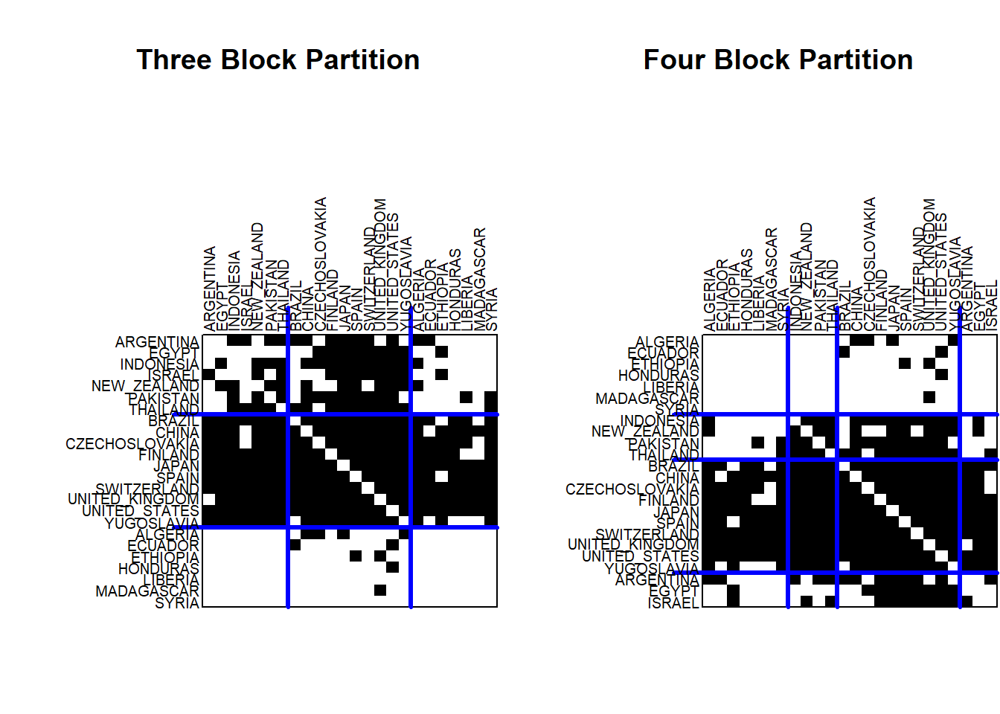
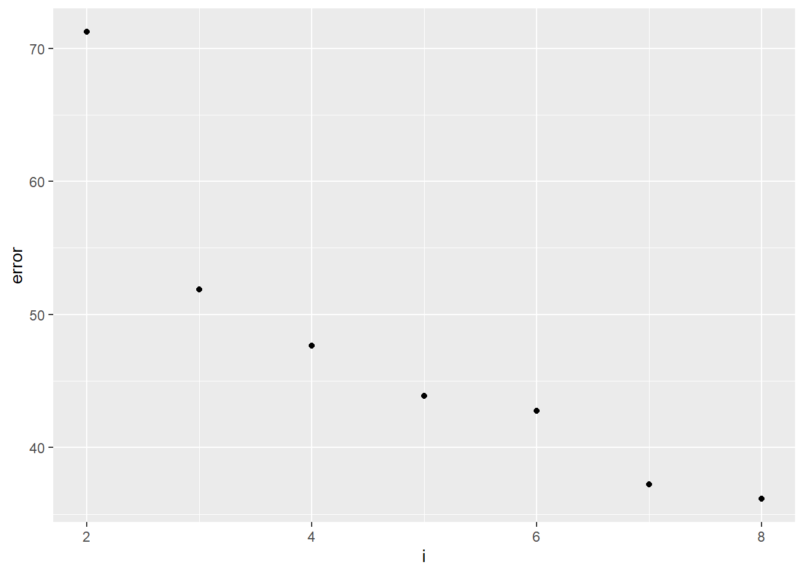
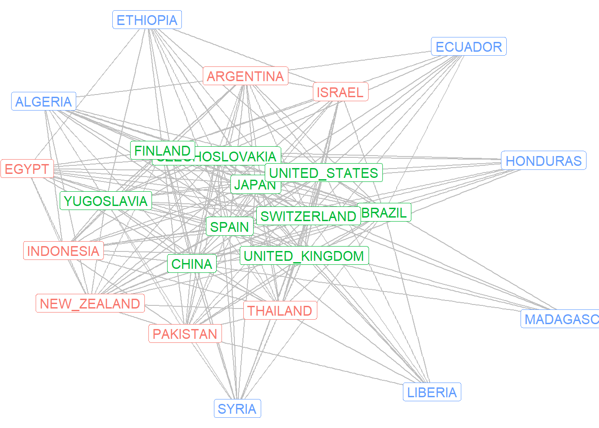

library(igraph)
library(ggraph)
# Define edges
edges <- data.frame(
from = c("Tom", "Steve"),
to = c("Eleni", "Marleigh")
)
# Create directed igraph object
parents <- graph_from_data_frame(edges, directed = TRUE)
# Define manual layout
layout <- matrix(c(
1, 2, # Tom: x=1, y=2
2, 2, # Steve: x=2, y=2
1, 1, # Eleni: x=1, y=1
2, 1 # Marleigh: x=2, y=1
), ncol = 2, byrow = TRUE)
# Assign groups for coloring
V(parents)$group <- ifelse(V(parents)$name %in% c("Tom", "Steve"), "Dads", "Daughters")Roles
Roles and relationships
What makes people similar to one another? In the previous chapter, we discussed how people might be similar because they have similar personal characteristics or attributes: for example, the same gender, race/ethnicity, or psychological disposition. In this chapter, we consider how people might be similar because they fulfill the same social role.
Social roles are different from attributes because they refer to how people relate to one another. A good example of a social role is a parent. Being a parent is not simply an attribute that someone has, it refers to a specific type of relationship: a parent cares for child. Tom and Steve fulfill similar social roles because they are each parents of children.
This idea of social roles can be extended to the analysis of social networks. Two nodes in a network graph are considered to be similar if they engage in similar relations with other nodes in the network. Let’s generate a simple graph showing this.
The above code starts by generating an edgelist with the two relationships – Tom to Eleni and Steve to Marleigh. This edgelist is then converted into an igraph. Then we manually set the layout so that the dads appear on the top of the graph and the daughters appear on the bottom. Finally, we add a vertex attribute called “group” which differentiates between the dads and the daughters. Now let’s generate the graph.
# Plot
ggraph(parents, layout = "manual", x = layout[,1], y = layout[,2]) +
geom_edge_link(arrow = arrow(length = unit(4, 'mm')),
end_cap = circle(3, 'mm')) +
geom_node_point(aes(color = group), size = 5) +
geom_node_text(aes(label = name), hjust = 0, nudge_x = 0.05) +
scale_color_manual(values = c("Dads" = "steelblue", "Daughters" = "firebrick")) +
xlim(0.8, 2.6) +
theme_void()
The ggraph command generates the layout, adds arrows to denote the directed ties, colors the two groups based on their role similarity, and then expands the horizontal space (“xlim”) so that the labels fit correctly.
Role similarity based on equivalence
Even without coloring the nodes, it is easy to tell that Tom and Steve are similar and that Eleni and Marleigh are similar. This is because they have equivalent relations in this network, which we can define based on their network metrics. Tom and Steve each have an indegree of 0 and an outdegree of 1. Because their network metrics are identical, they fulfill the same role in the graph. Likewise, Eleni and Marleigh are part of the same role set because their network metrics are identical (indegree = 1; outdegree = 0).
Three forms of equivalence: structural, automorphic, and regular
When defining equivalent role sets, we can make decisions about how similar we want those sets to be. Sometimes we might want to group together nodes that are perfectly identical. Other times we might want to relax our equivalence criteria in order to group together nodes that have similar features, but not identical ones. For example, Tom just had a second child, which means his outdegree is now 2. Should we keep him in the “Dads” group with Steve or should he now be included in a separate role group?
To examine this issue in more detail, let’s examine a new example network.
#### example graph
g <- make_graph( c("A","B",
"A","C",
"A","D",
"B","E",
"B","F",
"C","G",
"D","H",
"D","I"), directed = F)
ggraph(g, layout = "stress") +
geom_edge_link(color = "darkgrey") +
geom_node_point(color = "salmon", size = 10) +
geom_node_text(aes(label = name)) +
theme_void()
How might we group these nodes into equivalent role sets? This depends on whether we want to define our role sets as structurally, automorphically, or regularly equivalent. The most stringent form of equivalence is structural equivalence.
- Structurally equivalent actors have the exact same network metrics (e.g., indegree, outdegree, centrality, eccentricity, etc.)
- Structurally equivalent as set of nodes with the exact same connections to other nodes
- Structural equivalence is a local phenomenon - it reveals groups that are in close proximity in social space
- Structural equivalence results in the largest number of different groups
Let’s color the nodes based on structural equivalence.
#### add and graph structurally equivalent groups
V(g)$struct <- c(1,2,3,4,5,5,6,7,7)
ggraph(g, layout = "stress") +
geom_edge_link(color = "darkgrey") +
geom_node_point(aes(color = as.factor(struct)),
size = 10, show.legend = F) +
geom_node_text(aes(label = name)) +
ggtitle("Structural") +
theme_void()
This graph contains very few nodes that are exactly structurally equivalent. In fact, <H,I> and <E,F> are the only identical role sets. H and I have all of the same network metrics and they are connected in the same way to the same node (D). E and F are also identical in network metrics and are connected in the same way to the exact same node (B). All of the other nodes are unique from one another and therefore make up their own unique role set.
Now let’s relax the equivalence assumption by turning to automorphic equivalence, which is defined below.
- Automorphically equivalent actors have the exact same network metrics
- Automorphically equivalent nodes do not have to have the exact same connections to others
- Automorphic equivalence is a global phenomenon - it reveals groups that do not need to be in close proximity in social space
- Automorphic equivalence results in a medium number of different groups
Now let’s display the automorphic sets in this graph.
V(g)$auto <- c(1,2,3,2,4,4,5,4,4)
ggraph(g, layout = "stress") +
geom_edge_link(color = "darkgrey") +
geom_node_point(aes(color = as.factor(auto)),
size = 10, show.legend = F) +
geom_node_text(aes(label = name)) +
ggtitle("Automorphic") +
theme_void()
How did these role sets change? First, while <H,I> and <E,F> appeared as separate structurally equivalent sets, they can be combined into a single automorphically equivalent set. This is because they each contain the exact same network metrics and we removed the need for equivalent nodes to be connected to the exact same nodes. This relaxing of equivalence criteria illustrates the global character of automorphically equivalent role sets, which allows equivalent actors to be combined into sets even if they appear at opposite ends of the graph.
B and D are also automorphically equivalent because they have the identical network metrics. Why is C not included in <B,D>? They do not have the same metrics – for example, C has a degree of 2, whereas B and D each have a degree of 3.
Regular equivalence further relaxes the equivalence criteria…
- Regularly equivalent actors have similar, but not necessarily exact, network metrics
- Regularly equivalent nodes do not have to have the exact same connections to others
- Regular equivalence is a global phenomenon
- Regular equivalence results in the smallest number of different groups
Let’s reveal regularly equivalent role sets.
V(g)$reg <- c(1,2,2,2,3,3,3,3,3)
ggraph(g, layout = "stress") +
geom_edge_link(color = "darkgrey") +
geom_node_point(aes(color = as.factor(reg)),
size = 10, show.legend = F) +
geom_node_text(aes(label = name)) +
ggtitle("Regular") +
theme_void()
These regularly equivalent sets now group together all of the network “pendants”: <E,F,G,H,I>. And whereas C was not automorphically equivalent with B and D, it can be considered regularly equivalent because it appears to fulfill a similar mediating role between a peripheral actor and the central A node.
You may have sensed that regular equivalence is not as mathematically precise as structural and automorphic equivalence. Later we offer more details on how to statistically assign and label equivalent role sets. For now, let’s proceed to an example of how the idea of equivalence has been applied in research.
Roles of countries in the “world system”
Sociologists and political scientists have had a longstanding debate about how powerful countries may exploit weaker countries through trade relationships. Specifically, Wallerstein (1947) argued that the “world system” is comprised of 1) core countries that maintain trading connections with all other countries in the world, 2) peripheral countries that depend on core countries for access to goods, and 3) semi-periphery countries that are mostly dependent on the core, but maintain a few separate trade relations outside of the core.
This theory implies that countries play roles within the world system based on their trading relationships. Empirically, then, we should be able to observe a core/semi-periphery/periphery structure in trade data.
Let’s examine this idea using classic trade data collected by Smith and White in 1988. We will draw on a representative subset of the data reported by Wasserman and Faust in 1994. These data include multiple trade relationships, but to further simplify things, we will focus only on the trade of manufactured goods, which will provide a good test of the world systems thesis.
setwd("Q:/My Drive/Teaching/SOC708/sna/network data/Trade relations")
load("tradenets.rda")
as_adjacency_matrix(mg)24 x 24 sparse Matrix of class "dgCMatrix" [[ suppressing 24 column names 'ALGERIA', 'ARGENTINA', 'BRAZIL' ... ]]
ALGERIA . . . 1 1 . . . . . . . 1 . . . . . . . . . . 1
ARGENTINA 1 . 1 1 . 1 . . 1 . 1 1 1 . . . 1 1 1 . 1 . 1 .
BRAZIL 1 1 . 1 1 1 1 . 1 1 1 1 1 1 . 1 1 1 1 1 1 1 1 1
CHINA 1 1 1 . 1 . 1 1 1 1 1 . 1 1 1 1 1 1 1 1 1 1 1 1
CZECHOSLOVAKIA 1 1 1 1 . 1 1 1 1 1 1 . 1 1 . 1 1 1 1 1 1 1 1 1
ECUADOR . . 1 . . . . . . . . . . . . . . . . . . . 1 .
EGYPT . . . . 1 . . 1 1 . . . 1 . . . . 1 1 . . 1 1 1
ETHIOPIA . . . . . . . . . . . . . . . . . 1 . . . 1 . .
FINLAND 1 1 1 1 1 1 1 1 . 1 1 1 1 . . 1 1 1 1 1 1 1 1 1
HONDURAS . . . . . . . . . . . . . . . . . . . . . . 1 .
INDONESIA 1 . . 1 1 . 1 . 1 . . . 1 . . 1 1 1 1 . 1 1 1 1
ISRAEL . 1 . . . . . 1 1 . . . 1 . . 1 . 1 1 . 1 1 1 1
JAPAN 1 1 1 1 1 1 1 1 1 1 1 1 . 1 1 1 1 1 1 1 1 1 1 1
LIBERIA . . . . . . . . . . . . . . . . . . . . . . . .
MADAGASCAR . . . . . . . . . . . . . . . . . . . . . 1 . .
NEW_ZEALAND 1 . . 1 . . 1 . . . 1 . 1 . . . 1 1 . . 1 1 1 1
PAKISTAN . . . 1 1 . . . 1 . 1 . 1 1 . 1 . 1 1 1 1 1 1 .
SPAIN 1 1 1 1 1 1 1 . 1 1 1 1 1 1 1 1 1 . 1 1 1 1 1 1
SWITZERLAND 1 1 1 1 1 1 1 1 1 1 1 1 1 1 1 1 1 1 . 1 1 1 1 1
SYRIA . . . . . . . . . . . . . . . . . . . . . . . .
THAILAND . . 1 1 . . . . 1 . 1 1 1 . . 1 1 1 1 1 . 1 1 1
UNITED_KINGDOM 1 . 1 1 1 1 1 1 1 1 1 1 1 1 1 1 1 1 1 1 1 . 1 1
UNITED_STATES 1 1 1 1 1 1 1 1 1 1 1 1 1 1 1 1 1 1 1 1 1 1 . 1
YUGOSLAVIA 1 1 . 1 1 . 1 1 1 . 1 1 1 . . 1 1 1 1 1 1 1 1 .The manufactured goods relations are part of the mg igraph object. The as_adjacency_matrix allows us to extract and view the adjacency matrix. This is a 24 by 24 matrix of countries. The country names are listed to the left along the rows, but note that the same sequence of countries is represented across the columns (even though no column labels are shown).
Values of 1 indicate a trade relation in manufactured goods between countries. A “.” indicates no trade relation. The diagonal is always empty because we are not examining trade within countries. This matrix is also non-symmetric: the values tell us which country sends manufactured goods to which other country. The rows represent sent goods and the columns represent received goods. For example, the value of 1 in row 2 column 1 tells us that Argentina sent manufactured goods to Algeria. The “.” value in row 2 column 1 indicates that Algeria did not send manufactured goods to Argentina.
Based on these patterns, how can we identify different roles played by these trading partners?
Blockmodeling
Blockmodeling refers to a set of techniques that identifies patterns in network relationships and then groups nodes into “blocks” based on similar relationships. The approach results in a permutation and a partitioning of the adjacency matrix. The permutation step involves a re-ordering of the sequence of nodes (in our case, countries) along the rows and columns of the adjacency matrix. Countries with very similar trade relationships appear next to one another and those with very different trade relationships appear far apart. The partitioning step involves separating the matrix into blocks that contain distinctive relationships. These blocks constitute roles within the network.
Many different statistical approaches have been used for blockmodeling. The original procedure, developed in the 1970s, was called CONCOR because it involved a “concatenation of correlations” to derive at equivalent blockgroups. In short, this procedure iteratively correlated the adjacency matrices to the point where the matrix values revealed perfectly structurally equivalent block groups.
Modern procedures rely on more efficient clustering algorithms to partition the adjacency matrices based on equivalence. Applying fewer partitions results in regularly equivalent block groups, whereas many partitions results in structurally equivalent block groups. The researcher therefore gets to decide how strictly they want to define equivalence.
Let’s apply the clustering procedures from the blockmodeling package to demonstrate how this works.
library(blockmodeling)The first thing to do is to extract the adjacency matrix from the igraph object.
mat <- as.matrix(as_adjacency_matrix(mg)) Now let’s obtain blockmodeling results for a three block solution. The clustering procedure attempts multiple partitions to the adjacency matrix in order to identify the best three-way split that reduces error by minimizing internal block member differences and maximizing differences between blocks.
# a three block partition
class3 <- optRandomParC(
M=mat, k=3, rep=10, approach="ss", blocks="com")
Starting optimization of the partiton 1 of 10 partitions.
Starting partition: 3 3 2 3 3 3 3 1 3 3 3 3 3 3 3 3 3 3 3 3 3 3 3 3
Final error: 51.86916
Final partition: 3 1 2 2 2 3 1 3 2 3 1 1 2 3 3 1 1 2 2 3 1 2 2 2
Starting optimization of the partiton 2 of 10 partitions.
Starting partition: 2 2 3 1 3 1 1 1 2 1 3 1 1 3 1 1 1 3 2 2 1 2 3 2
Final error: 51.86916
Final partition: 1 2 3 3 3 1 2 1 3 1 2 2 3 1 1 2 2 3 3 1 2 3 3 3
Starting optimization of the partiton 3 of 10 partitions.
Starting partition: 3 3 3 3 3 3 3 3 2 3 3 3 3 3 3 1 3 3 3 3 3 3 3 3
Final error: 51.86916
Final partition: 1 2 3 3 3 1 2 1 3 1 2 2 3 1 1 2 2 3 3 1 2 3 3 3
Starting optimization of the partiton 4 of 10 partitions.
Starting partition: 1 1 1 1 1 1 1 1 1 1 3 1 1 1 1 1 1 1 1 1 1 1 2 1
Final error: 51.86916
Final partition: 1 3 2 2 2 1 3 1 2 1 3 3 2 1 1 3 3 2 2 1 3 2 2 2
Starting optimization of the partiton 5 of 10 partitions.
Starting partition: 2 2 2 2 2 2 2 2 2 3 2 2 2 2 2 2 2 2 2 2 2 2 2 1
Final error: 51.86916
Final partition: 1 3 2 2 2 1 3 1 2 1 3 3 2 1 1 3 3 2 2 1 3 2 2 2
Starting optimization of the partiton 6 of 10 partitions.
Starting partition: 1 2 2 3 1 2 1 1 3 1 1 1 3 2 2 2 3 2 2 3 2 1 2 2
Final error: 51.86916
Final partition: 2 1 3 3 3 2 1 2 3 2 1 1 3 2 2 1 1 3 3 2 1 3 3 3
Starting optimization of the partiton 7 of 10 partitions.
Starting partition: 1 2 2 2 3 2 3 2 3 2 3 3 1 3 1 2 1 3 1 1 1 1 2 3
Final error: 51.86916
Final partition: 3 1 2 2 2 3 1 3 2 3 1 1 2 3 3 1 1 2 2 3 1 2 2 2
Starting optimization of the partiton 8 of 10 partitions.
Starting partition: 2 2 1 2 3 1 1 2 1 2 2 2 2 2 2 1 2 3 1 2 3 1 3 3
Final error: 51.86916
Final partition: 2 1 3 3 3 2 1 2 3 2 1 1 3 2 2 1 1 3 3 2 1 3 3 3
Starting optimization of the partiton 9 of 10 partitions.
Starting partition: 1 1 1 1 1 1 1 1 1 3 1 1 1 1 1 1 1 1 1 2 1 1 1 1
Final error: 51.86916
Final partition: 2 3 1 1 1 2 3 2 1 2 3 3 1 2 2 3 3 1 1 2 3 1 1 1
Starting optimization of the partiton 10 of 10 partitions.
Starting partition: 1 1 1 1 1 2 1 1 1 1 3 1 1 1 1 1 1 1 1 1 1 1 1 1
Final error: 51.86916
Final partition: 2 1 3 3 3 2 1 2 3 2 1 1 3 2 2 1 1 3 3 2 1 3 3 3
Optimization of all partitions completed
All 10 solutions have err 51.86916 Note that the results end with a final error estimate. Higher error values represent worse fit to the data. We’ll return to this in a moment.
Now let’s estimate a four block solution.
# a four block partition
class4 <- optRandomParC(
M=mat, k=4, rep=10, approach="ss", blocks="com")
Starting optimization of the partiton 1 of 10 partitions.
Starting partition: 2 4 2 2 2 2 2 2 2 2 2 2 3 2 2 2 2 2 2 2 2 2 1 2
Final error: 48.56111
Final partition: 3 4 2 2 2 1 3 1 2 1 4 4 2 1 1 4 4 2 2 1 4 2 2 2
Starting optimization of the partiton 2 of 10 partitions.
Starting partition: 3 4 3 2 3 3 1 3 1 2 3 4 2 4 2 1 4 2 1 4 3 3 1 1
Final error: 48.16667
Final partition: 4 3 1 2 1 4 3 4 2 4 3 3 2 4 4 3 3 2 2 4 3 2 2 1
Starting optimization of the partiton 3 of 10 partitions.
Starting partition: 1 1 3 4 1 1 1 1 1 1 1 1 2 1 1 1 1 1 1 1 1 1 1 1
Final error: 48.16667
Final partition: 4 1 3 2 3 4 1 4 2 4 1 1 2 4 4 1 1 2 2 4 1 2 2 3
Starting optimization of the partiton 4 of 10 partitions.
Starting partition: 1 2 4 3 3 4 3 4 2 1 4 4 3 2 1 4 4 4 2 2 3 4 3 2
Final error: 47.64365
Final partition: 1 4 3 3 3 1 4 1 3 1 2 4 3 1 1 2 2 3 3 1 2 3 3 3
Starting optimization of the partiton 5 of 10 partitions.
Starting partition: 3 4 2 2 1 4 2 3 2 4 1 3 1 4 3 1 2 4 2 1 3 1 3 4
Final error: 48.16667
Final partition: 4 3 1 2 1 4 3 4 2 4 3 3 2 4 4 3 3 2 2 4 3 2 2 1
Starting optimization of the partiton 6 of 10 partitions.
Starting partition: 1 3 3 2 3 3 1 1 4 2 1 4 3 1 2 4 4 1 4 2 2 2 4 3
Final error: 48.16667
Final partition: 2 1 3 4 3 2 1 2 4 2 1 1 4 2 2 1 1 4 4 2 1 4 4 3
Starting optimization of the partiton 7 of 10 partitions.
Starting partition: 3 3 2 1 1 4 1 4 4 2 3 3 1 2 3 2 4 4 3 1 2 3 4 2
Final error: 48.56111
Final partition: 2 1 4 4 4 3 2 3 4 3 1 1 4 3 3 1 1 4 4 3 1 4 4 4
Starting optimization of the partiton 8 of 10 partitions.
Starting partition: 1 1 1 1 4 1 1 1 1 1 1 1 1 1 1 1 1 3 1 1 2 1 1 1
Final error: 48.16667
Final partition: 1 2 4 3 4 1 2 1 3 1 2 2 3 1 1 2 2 3 3 1 2 3 3 4
Starting optimization of the partiton 9 of 10 partitions.
Starting partition: 1 2 2 2 2 2 2 2 2 2 2 2 2 2 2 2 2 2 3 2 2 2 4 2
Final error: 48.56111
Final partition: 1 2 3 3 3 4 1 4 3 4 2 2 3 4 4 2 2 3 3 4 2 3 3 3
Starting optimization of the partiton 10 of 10 partitions.
Starting partition: 1 4 3 4 2 1 3 1 4 2 2 2 3 2 1 4 1 3 2 4 3 4 1 2
Final error: 47.64365
Final partition: 2 1 3 3 3 2 1 2 3 2 4 1 3 2 2 4 4 3 3 2 4 3 3 3
Optimization of all partitions completed
1 solution(s) with minimal error = 47.64365 found. Now let’s examine the permutations and partitioning for these two different solutions, starting with the three block partition.
plot(class3, main="")
title("Three Block Partition")
This useful visualization illustrates the presence of trade relations by darkened cells. The countries are ordered (permuted) based on similarity in relations and separated (partitioned) into block groups denoted by the blue lines.
Let’s consider the patterns in the the three block group model. The center of the adjacency matrix shows the trade relations between the countries in the middle or second block group. The diagonal is understandably empty, but otherwise the block is nearly a complete graph. The exception is that Yugoslavia does not send manufactured goods to Brazil. Otherwise, all of these countries both send and receive manufactured goods from their fellow block members. To the right and to the left of the center partition, the results show that the second block group sends manufactured goods to many of the countries in the first block (Argentina to Thailand) and the third block (Algeria to Syria). Looking above the center partition, the results show that the second block group receives manufactured goods from many of the countries in the first block group. However, very few of the countries in the third block group send manufactured goods to the second block group. These patterns tell us something about the roles played by these countries. The second block represents the core in the world system. They send manufactured goods throughout the world. Block 3 represents periphery countries. They send manufactured goods to only a small number of countries in the core and otherwise receive manufactured goods from the core and a few other coutries. The first block represents the semi-periphery countries. They are heavily involved in trading manufactured goods with the core countries, with only a modest set of exports to periphery countries.
Next let’s compare the three block partition with a four block partition.
par(mfrow=c(1,2))
plot(class3, main="")
title("Three Block Partition")
plot(class4, main="")
title("Four Block Partition")
The four block partition looks similar, but the original first block has now been partitioned into two separate blocks: Argentina to Israel and Indonesia to Thailand.
Which is the best blockmodeling solution? We can use the error estimates to help us make our decision.
On the one hand, further partitioning of the matrix will always result in a reduction in error. But that does not mean that the maximum number of partitions will always be better. A smaller number of partitions, given only modest error estimates, can provide a parsimonious and easy to understand explanation as to the optimal number of roles in the network. So really the goal is to try to balance a small number of groups (less complex is good!) with a reduction of error (precision is also good!).
To do this, let’s estimate multiple blockmodel solutions and examine the error estimates. Here I created a loop that runs blockmodels for 2 groups all the way to 8 groups. I then save the error estimates and plot them in a graph.
# generate a null data frame
error <- as.data.frame(NULL)
# index for the loop can be run separately for each row in the df
r <- 2:8
##### estimate multiple blockmodels with different block number values
for (i in r) {
class <- optRandomParC(M=mat, k=i, rep=10, approach="ss", blocks="com")
# bind the data and append to the dataframe
tempinfo <- cbind(i, as.numeric(class$err[10]))
error <- rbind(error, tempinfo)
}
colnames(error) <- c("i","error")
##### plot the results - what is the best partition value?
ggplot(error, aes(x = i, y = error)) +
geom_point()
This graph is referred to as an “elbow” graph. We are generally looking for the value on the x-axis (the number of block groups) that yields a major reduction in the error value. Here we can see that while the error is reduced with each additional partition, the biggest reduction in error is apparent when we move from two block groups to three. This creates the elbow in the graph, which suggests that three block groups is a very good solution.
Finally, we can apply the block group membership to the network in order to visualize the groups as part of a network graph. The optimal partition for the three block solution is contained in the following object.
class3$best$best1$clu [1] 3 1 2 2 2 3 1 3 2 3 1 1 2 3 3 1 1 2 2 3 1 2 2 2We can therefore attach these values as a vertex attribute in the igraph object. Then we can color the labels in a network graph to denote the countries in the three different block groups.
V(mg)$opt.blocks <- class3$best$best1$clu
ggraph(mg, layout = "fr") +
geom_edge_link(color = "grey") +
geom_node_label(aes(label = name, color = as.factor(opt.blocks)),
size = 4, show.legend = F) +
theme_void()
Here we can see the core countries in the green labeling, the semi-periphery countries in the red labeling, and the blue countries on the periphery. These results are largely consistent with Wallerstein’s theory of the world system.
Note that our decision to limit the partitioning to a small number partitions and block groups reflects an interest in regularly equivalent roles in the network. Further partitioning would result in a set of blocks that are more identical (and thus structurally equivalent) in their network relations.